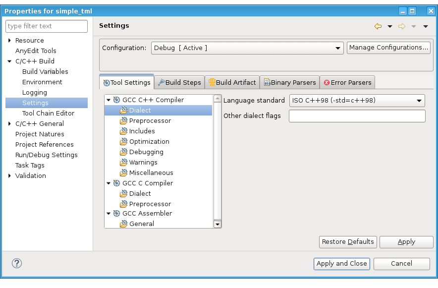

Enabling modern C++ support for SmarTest 7
Most modern libraries require a modern C++ standard. SmarTest uses the Red Hat Developer Toolset to support modern C++.
Before you begin
For information on the Red Hat Developer Toolset, see: User Guide - Red Hat Developer Toolset
Starting SmarTest without enabling the developer toolset, uses the older GCC 4.8 compiler, which does not support modern C++ standards. To use modern C++, use GCC 10. However, the GCC 10 devtoolset compiler is stricter. It returns more warnings and errors about valid code. For further information about compatibility of different GCC versions and modes, see:
Red Hat Developer Toolset - GNU C++ Compiler - C++ Compatibility
Enabling the devtoolset
To enable the devtoolset-10, enter the command:
scl enable devtoolset-10 <cmd>
If command includes options, add -- before the command.
Examples:
scl enable devtoolset-10 -- HPSmarTest -o
scl enable devtoolset-10 bash
scl enable devtoolset-10 make
Enabling C++14 support
After enabling devtoolset-10, you can use C++14. C++14 with GNU extensions is the default standard for GCC 10.
To enable C++14 without GNU extensions, use the option:
-std=c++14
Enabling C++98 support
C++98 with GNU extensions is the default standard for GCC 4.8 (RHEL 7.4: /usr/bin/g++).
To use GCC 10 from devtoolset-10, use the command line parameter:
-std=gnu++98
To enable C++98 without GNU extensions, for both compilers use the option:
-std=c++98.
- Open the project properties of your test method project.
- In , set Language standard to the standard required (for
example, ISO C++98) or use Other dialect flags field if the flag is not
listed.

Using GCC 10
Using GCC 10 in place of GCC 4.8 brings with it some added restrictions and changes in behaviour including the following:
- Warnings using GCC 10
- GCC 10 issues more warnings than GCC 4.8. If you are, for example, compiling with
-Werror, you must fix these often valid warnings or explicitly not
treat them as errors using:
-Wno-error=
Alternatively, completely ignore them using:
-Wno-
Examples:
-Wno-error=stringop-truncation
-Wno-error=format-overflow=
-Wno-address-of-packed-member
- Non-standard-compliant code rejected by GCC 10
- Some non-standard-compliant code that was accepted by GCC 4.8 is not accepted by GCC
10.
For complex values, assignment to imag() and real() is no longer accepted. Use setter functions imag(double) and real(double) instead.
The stream classes of the standard library can no longer be compared with NULL. Evaluate the stream in a boolean context. Instead of using if (file != NULL) ... use if (file).
- Stream output
- Output to streams now behaves more intuitively:
int f() { std::cout << "b"; return 1; } int main() { std::cout << "a " << f() << " c\n"; return 0; }Output GCC 10:
a b1 c
Output GCC 4.8:
ba 1 c
If you previously implemented a firmware stream class, the behavior of such a class is affected by this change.
Failing example:
double get_vterm() { fw_out << // ... some FW command ... return v; } void do_cmd() // ... failing example // { fwout << "TERM PRM,A," << get_vterm() << "..."; }Corrected example:
double get_vterm() { fw_out << // ... some FW command ... return v; } void do_cmd() // ... corrected example { const double vterm = get_vterm(); fwout << "TERM PRM,A," << vterm << "..."; } - Streaming between streams
- It is no longer possible to stream from one stream to another.
Example 1:
std::ostringstream ostr; ostr << 123; std::cout << ostr << '\n';
Example 2:
std::ostringstream ostr; ostr << 123; std::cout << ostr.str() << '\n';
C++98 specific considerations
For the following APIs there is a compiler warning when using the compile option -Wpedantic in the MAPI header: SMC_ARM(), SMC_ARM_FOR_SITES(), SMC_ARM_OTHER_TS(), and SMC_ARM_OTHER_TS_FOR_SITES().
C++98 valid code no longer valid since C++11
Moving to C++11 or later brings with it some added restrictions and changes in behavior. Some code that was valid in C++98 is no longer valid since C++11, for example:
- In-class initialization of members
- GCC 10 does not allow in-class initialization of static data members of non-integral
type.
Invalid code:
class A { static const double v = 1.1; };Valid code:
class A { static const double v; };Implementation file:
const double A::v = 1.1;
- String literal operators
- The string literal operators have been introduced with C++11 and, for example, macros used
within string concatenation must now be separated by a space to not be interpreted as string
literal operators.
Invalid code:
#define INT_FMT "%d" ... printf("cnt = "INT_FMT "\n");Valid code:
#define INT_FMT "%d" ... printf("cnt = " INT_FMT "\n"); - Destructors
- Destructors are noexcept by default since C++11. If an exception is
thrown and not caught within a destructor or function that is marked as
noexcept, the program terminates. If you want to allow a destructor to
throw an exception, you must explicitly add noexcept(false) to the
destructor. For example:
class Guard { public: Guard(); ~Guard() noexcept(false); }; - New feature conflicts
- New features may conflict with existing ones in your code or code from third-party
libraries when only using the namespace std (for example,
std::function) or in combination, for example, with namespace boost (std::weak_ptr, std::shared_ptr). - Move semantics
- Move semantics make explicit instantiation of
std::make_pair<>invalid.Invalid example:
void f(std::pair<std::string, std::string> p); ... f(std::make_pair<std::string, std::string>("abc", "def");Corrected example:
void f(std::pair<std::string, std::string> p); ... f(std::make_pair("abc", "def");
Archive libraries
| archive | shared library |
|---|---|
| pws/lib/libstophere.a | pws/sh_lib/libstophere.so |
| pws/lib/tm_funcs.a | pws/sh_lib/libtm_funcs.so |
| pws/lib/xse.a | pws/sh_lib/libxse.so |
| pws/lib/s_com.a | pws/sh_lib/libs_com.so |
| com/lib/libluna_dl.a | com/sh_lib/libluna_dl.so |
| com/lib/multi_site.a | com/sh_lib/libmulti_site.so |
| com/lib/int64.a | com/sh_lib/libint64.so |
| com/lib/libextwidgets.a | com/sh_lib/libextwidgets.so |
| com/lib/pdb.a | com/sh_lib/libpdb.so |
| com/lib/gen_check.a | com/sh_lib/libgen_check.so |
| com/lib/libeds.a | com/sh_lib/libeds.so |
| com/lib/ui_hpt_util.a | com/sh_lib/libui_hpt_util.so |
| com/lib/libdrl.a | com/sh_lib/libdrl.so |
| com/lib/libgu.a | com/sh_lib/libgu.so |
| com/lib/ui_graphic.a | com/sh_lib/libui_graphic.so |
| com/lib/dm.a | com/sh_lib/libdm.so |
| com/lib/fw_mx.a | com/sh_lib/libfw_mx.so |
| prod_com/sh_lib/libcicpi.a | prod_com/sh_lib/libcicpi.so |
| fw/lib/pif.a | fw/sh_lib/libpif.so |
| mix_sgnl/lib/libadiUP.a | mix_sgnl/sh_lib/libadiUP.so |
| segments/formatter/lib/libCSTDF.a | segments/formatter/sh_lib/libCSTDF.so |
| segments/formatter/lib/libSHMOO.a | segments/formatter/sh_lib/libSHMOO.so |
Functional changes
- Introduced in SmarTest 7.6.0
- SmarTest 7.6.2: GNU Compiler Collection (GCC) version 10 support.